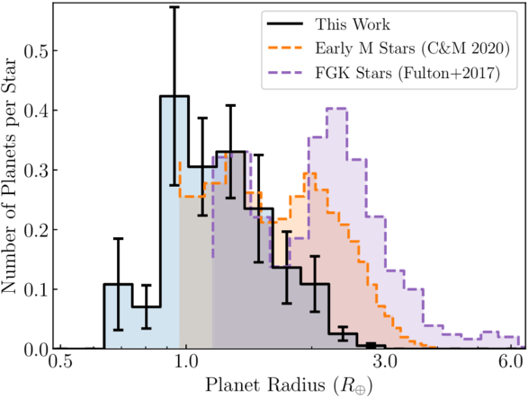
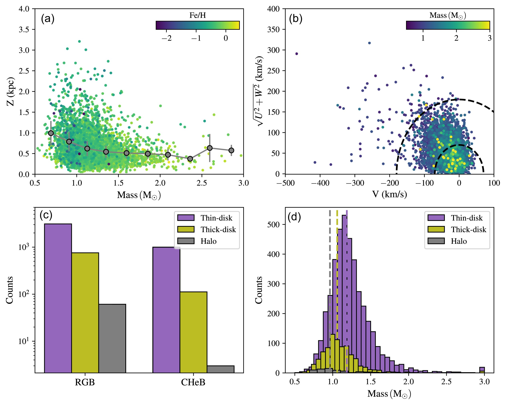
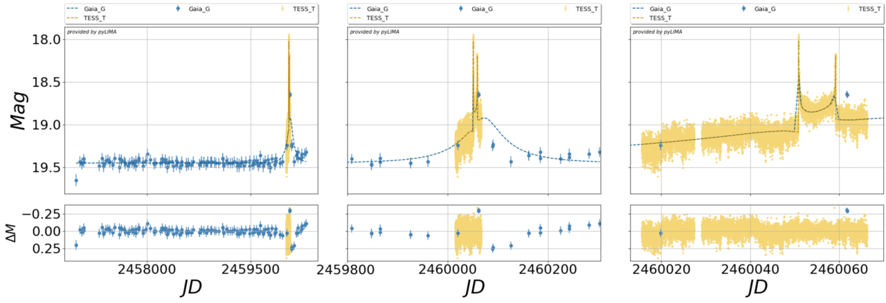

Welcome TESS followers to our latest news bulletin!1
The TESS Science Support Center has had a busy summer! Members of the TSSC attended two conferences related to TESS Science: The Exoplanets 6 conference in Porto, Portugal, and the TESS Asteroseismology Science Conference (TASC10) in Aarhaus, Denmark. The breadth of work enabled by TESS was really on display at both events with the many exciting talks and poster presentations. While every result was amazing to hear, we picked out three that highlight some of the most unusual or unexpected findings. Enjoy!
At the Exoplanets 6 conference, a new finding added a new wrench in our understanding of exoplanet demographics. Astronomers used TESS to survey thousands of the galaxy's smallest stars - only 0.1 to 0.4 times the mass of Sun - looking for planets. Unlike Sun-like stars, which host a mix of rocky “super-Earths” and gaseous “mini-Neptunes” with a gap separating these two populations, these tiny stars almost exclusively host rocky planets just a bit larger than Earth. The change in the makeup of the planet population around different size stars adds another clue to understanding how planets form.
An emerging theme in both conferences was a shift to exploring how stars and exoplanets are affected by their location in the galaxy, a field called Galactic archeology. In one such study, astronomers used TESS to detect the internal sound waves—or "star quakes"—within over 19,000 aging red giant stars. By measuring these deep vibrations, scientists determined each star's size, mass, and age, providing a massive new map to help uncover the history and formation of our Milky Way galaxy.
Finally, an exciting new giant exoplanet system was discussed, marking the first time TESS has found a planet using a gravity-based light magnifying effect known as microlensing. By combining TESS's rapid observations with long-term data from the Gaia spacecraft, scientists demonstrated a powerful new way for TESS to uncover hidden worlds across our galaxy.
TESS Planet Occurrence Rates Reveal the Disappearance of the Radius Valley around Mid-to-late M Dwarfs (Gillis, Cloutier, and Pass, 2026)
In a comprehensive survey utilizing data from TESS, astronomers have conducted the deepest search to date for planets orbiting mid-to-late M dwarfs—the most common, yet smallest and dimmest, stars in our galaxy. TESS’s full-sky coverage and red-sensitive bandpass allowed for high-precision monitoring of these cool stars, which previous missions like Kepler could not observe in large numbers. By applying a custom transit-search pipeline to TESS light curves from over 8,100 mid-to-late M dwarfs, researchers successfully identified 77 transiting planet candidates. The resulting planet population ultimately revealed that the radius valley—a well-known demographic gap separating rocky super-Earths from gaseous sub-Neptunes—completely disappears around our galaxy's smallest stars. Instead, the TESS data unveil a single, dominant population of super-Earths that outnumber sub-Neptunes by more than five to one, providing vital observational evidence that planets forming around the lowest-mass stars are predominantly rocky worlds.
Global asteroseismology of 19 000 red giants in the TESS Continuous Viewing Zones (Sreenivas, K. et al, 2026)
This recent study leverages the expansive, long-duration photometric observations from TESS to detect and analyze internal sound waves—a technique known as asteroseismology—in over 19,000 red giant stars located in the TESS Continuous Viewing Zones. TESS's extended observation baselines were the crucial driving force behind this science result, allowing researchers to pierce through background noise to measure stellar oscillations with precision and dramatically increase the detection of fainter, more distant red giants. By combining these TESS asteroseismic measurements with existing spectroscopic and astrometric data, the team accurately determined fundamental stellar properties such as mass, radius, and surface gravity. Because a red giant's mass serves as a proxy for its age, this uniformly measured catalog provides a powerful foundation for future galactic archaeology work. Astronomers can now use this data to map the age, chemical composition, and kinematic history of different stellar populations across the Milky Way, effectively allowing them to reconstruct the structural formation and evolutionary timeline of our galaxy.
TESS's First Bound Microlensing Planet: A Binary Microlensing Event Revealing a Planetary Companion toward the Galactic Plane (Harris, M. et al, 2026)
In a landmark discovery for TESS, astronomers have identified its first gravitationally bound microlensing planet, Gaia23bra b, showcasing the remarkable scientific synergy between long-term sky monitoring and rapid, high-cadence observations. While the Gaia spacecraft provided the multi-year baseline necessary to identify the initial, gradual brightening of the background star, it was TESS’s continuous, 200-second rapid imaging that proved critical to the planet's discovery. TESS successfully captured short-lived "caustic-crossing" spikes in the light curve—sharp, distinct magnifications of light that act as the telltale signatures of a binary lens system, which in this case was a star hosting a giant exoplanet. Without TESS's high temporal resolution, this fleeting distortion would have been missed or poorly resolved. By catching the high-magnification features, TESS's observations were essential for breaking physical degeneracies in the data, allowing the team to accurately measure the planet's mass ratio and orbital separation. Ultimately, this result proves that TESS is able to discover planetary systems beyond its primary mission scope, particularly in densely populated regions like the Galactic Plane.

Fig. 1: Taken from Gillis et al (2026). This plot shows the planet occurrence rate found by Gillis et al (2026) as compared to that found in previous works. The super-Earth peaks have been scaled to match the super-Earth peak found in this work. In the latest M dwarfs, the prominent ‘two-hump’ planet radius distribution is completely absent.

Fig. 2: Taken from Sreenivas et al (2026). This figure directly demonstrates the study's application to galactic archaeology by mapping the relationships between stellar mass, velocity, and distance from the galactic plane. The upper left panel shows the distribution of all the oscillating stars, colour-coded by metallicity, with a solid line showing the median distance from the galactic plane per bin. The upper right panel shows the Galactocentric velocities colour-coded by mass. The dashed semicircles show the boundaries from M. K. Mardini et al. (2022) used to define different Galactic populations. The bottom left shows the distribution of Red Giant Branch and Core Helium Burning stars in different populations. Finally, the bottom right shows the distribution of asteroseismic mass in the different populations, with the vertical dashed lines showing the median mass value.

Fig. 3: Taken from Harris et al (2026) This figure illustrates the overall scientific synergy between Gaia's long-baseline coverage of the event (left panel, blue dots) alongside TESS’s high-cadence observations (right panel, yellow dots) that successfully captured the crucial caustic-crossing peaks. The best-fitting model for the microlensing event is shown with the blue dashed line in each panel.
-
This news item was created with input from OpenAI / NASA GSFC, 2026 ↩